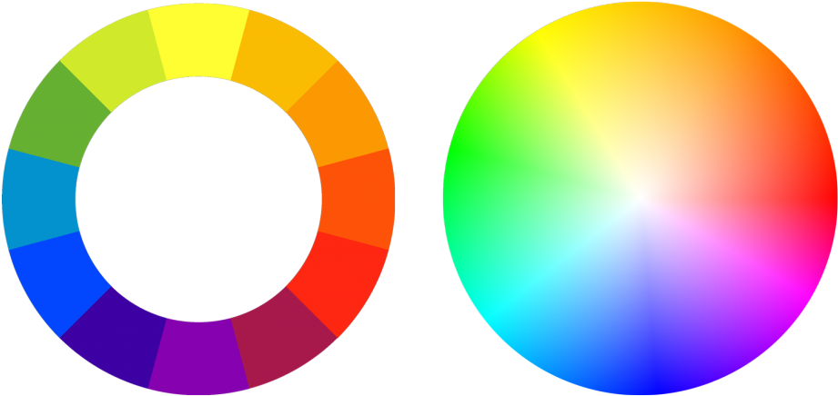

WCAG Principles
The WCAG guideline provides four principles that help assess the accessibility of a website.
1. Perceivability
Website should provide information and user interface components in an easily perceivable way.
- Use olor, images, fonts, element organization to help the eye.
- MAke sure website does not "break" if accessibility devices and add-ons are used to change text size, colors, etc.
2. Operability
Interface components must be operable through multiple ways.
Website must be tested to function properly with:
- Make sure site works with both mobile and computer devices.
- Make sure interface is navigable with both mouse and keyboard navigation
- Use flexbox for boxes!
3. Understandability
Information and the user interface must be easy and logical for the user to understand.
- Use clear, simple language where available.
- Links must be clear about where they link to.
- Header must be clear and descriptive.
4. Robustness
Content must be robust enough that it can be interpreted reliably by a wide variety of user agents, including assistive technologies.
Color contrast
A color wheel showcasing the gradient of all different color hues.
Color contrast helps people with different eyesights navigate the page better.
Links can be colored.
Try hovering over links to notice color change.
Color palette

A color palette showcasing contrasting shades of pink
Color paletters are collections of colors that match together visually. Elements of the same type should share a color, for consistent, easy to follow visual style.
Images should have text alternatives and captions
Try hovering over links to notice color change.
Color palette

A brown cat jumping over a field of grass.
Images should be accompanied by text alternatives and captions.
Color palette

A fluffy cat opening and closing its paws.
Videos, gifs and other moving content should avoid flashing colors.
⚠️ Attention! ⚠️
Layout can emphasize content through visual and non-visual methods.
Additionally
Layout can guide the user's eye towards different things on the page. However non-visual assistive techonlogies, must be considered within layout also.